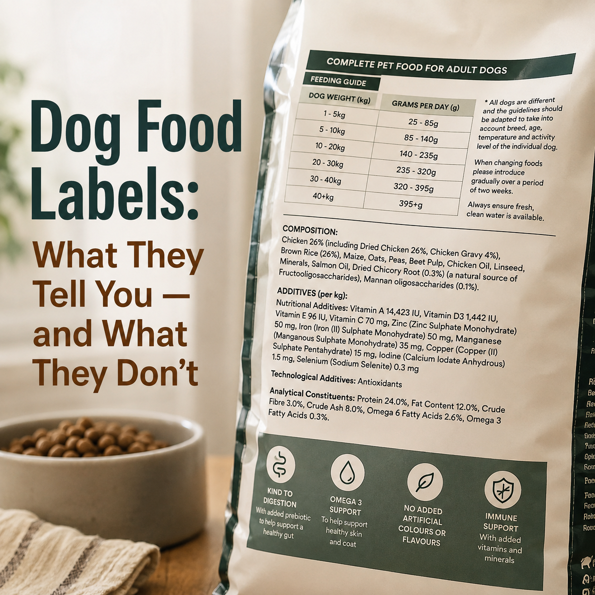
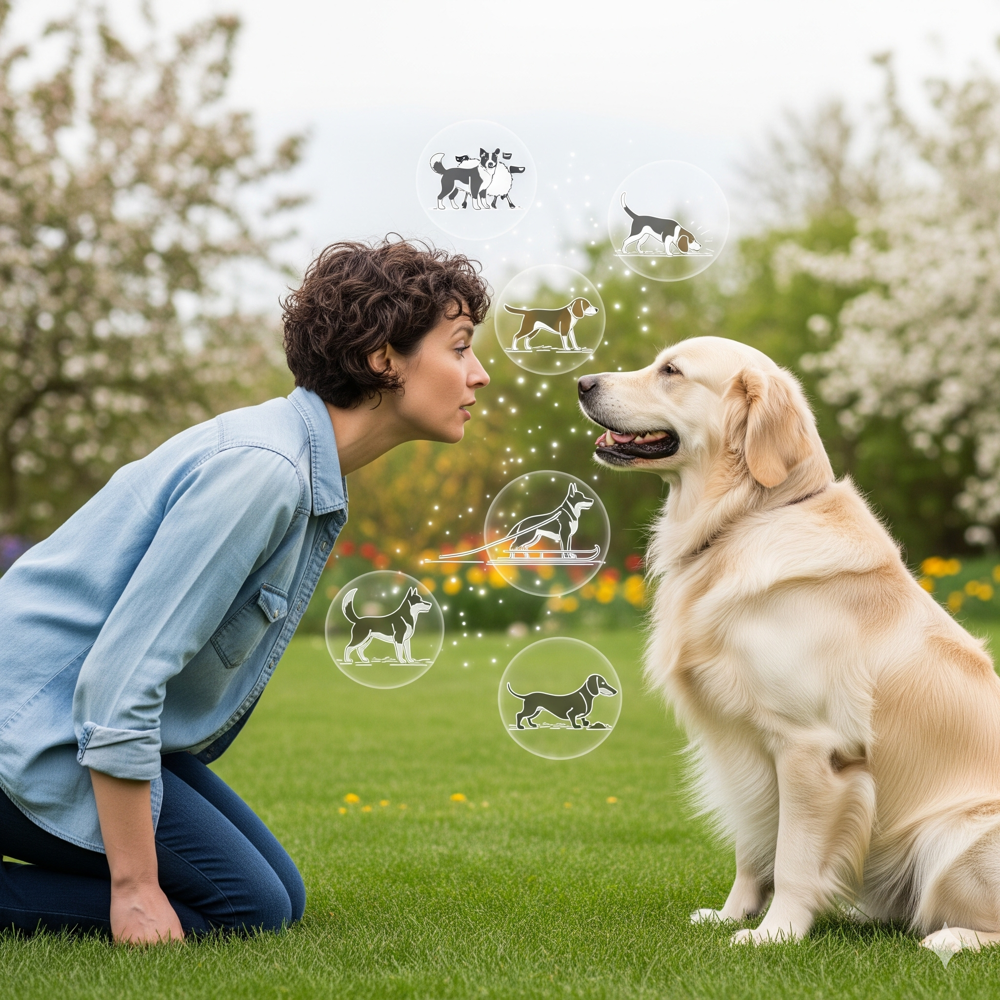
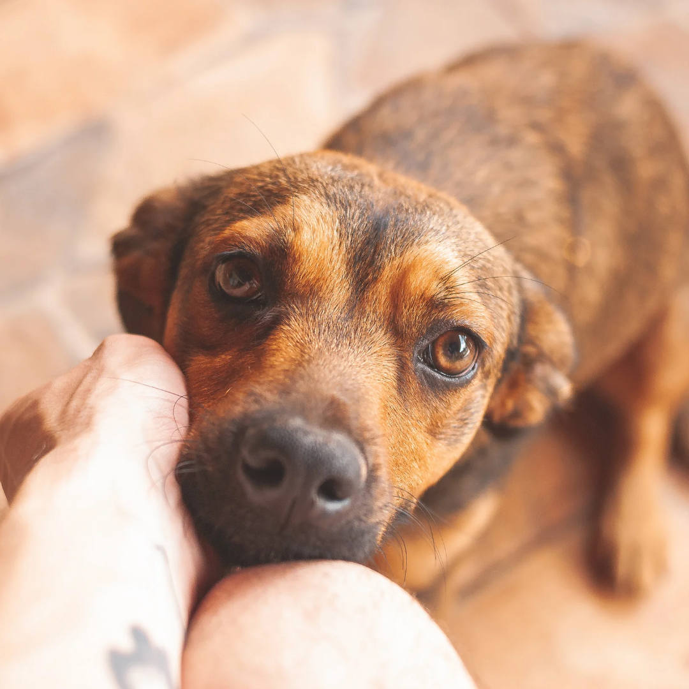

Blog
Practical insights into canine nutrition and behaviour — helping you connect the dots between what your dog eats, and how they behave, so you can make informed choices for their wellbeing.

15 Oct 2026
What Actually Helps Dogs Cope with Fireworks?
Every new fireworks season starts and you are already worried about how your dog will cope this time. With so many suggestions about the best…
Read more →
21 Aug 2026
Dog Food Labels: What They Tell You — and What They Don't
Choosing food for our dogs has never felt more complicated. Today, we have an enormous number of options: kibble, fresh food, raw diets, grain-free…
Read more →
6 Aug 2026
Beyond the Food Bowl: How Holidays Affect Your Dog's Body and Behaviour
The summer holidays are often a joyful time of year. We spend more time outdoors, gather with family and friends, enjoy barbecues, take trips away,…
Read more →
23 Jul 2026
Before the Next Heatwave: How Heat Can Affect Your Dog’s Digestion and Behaviour
Read more →
24 Oct 2025
It’s Not a Recall Problem – Why Your Dog Can’t Listen to You
Read more →

9 Sep 2025
Your Dog's Breed Is Talking — Are You Listening?
Read more →
2 Sep 2025
Why Online Dog Training Works Better Than You Think
Read more →
12 Aug 2025
The Mailman Paradox: Why Your Dog Thinks Barking Is Their Superpower
Read more →

1 Jul 2025
Healing Dog Trauma: Why 'More Training' Fails After an Attack
Read more →
20 May 2025